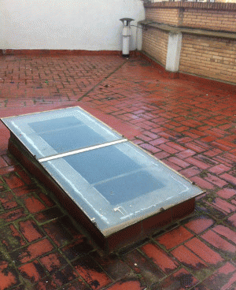

Microcemento
nuestro producto estrella
Podemos hacer todo lo que imagine, personalizar su baño para hacerlo completamente impermeable y poder limpiarlo en cuestion de segundos, realizar un recorrido en alto o medio transito para evitar deslizamientos
Todo esto en los colores mas atrevidos.
Impermeabilizaciones
Pacmar esta especializado en las impermeabilizaciones de superficies como terrazas o tejados.
Disponemos de los mejores materiales para preparar su terraza o tejado contra cualquier tipo de inclemencia
Estamos tan seguros de la calidad de nuestros productos que si realiza una reforma completa le damos 10 años de garantia (consulte condiciones)

Reformas
Pacmar tiene una experiencia con mas de 35 años en reformas, utilizando todas las técnicas tanto nuevas como mas antiguas para hacer de su hogar un sitio único.
Coordinamos todos los gremios para darle el mejor servicio